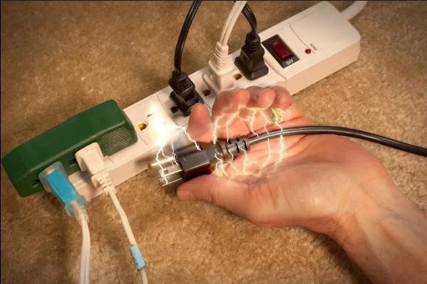

Cuidados Imediatos com Choque Elétrico
Se alguém sofrer um choque elétrico, é crucial agir rapidamente, mas com segurança:
- Desligue a fonte de energia, se possível, ou afaste a pessoa da fonte com um objeto isolante, como madeira seca.
- Nunca toque diretamente na vítima enquanto ela estiver em contato com a fonte de eletricidade.
- Ligue imediatamente para os serviços de emergência (192) se a pessoa estiver inconsciente ou sem respirar.
- Se a vítima não estiver respirando, inicie a reanimação cardiopulmonar (RCP) enquanto espera por ajuda médica.
Prevenção de Choques Elétricos
Para evitar acidentes com eletricidade, siga estas recomendações:
- Verifique regularmente o estado dos fios e cabos elétricos em sua casa.
- Nunca manuseie equipamentos elétricos com as mãos ou pés molhados.
- Use protetores de tomadas em ambientes onde há crianças.
- Evite o uso de equipamentos elétricos em áreas úmidas, como banheiros e piscinas.
- Contrate um eletricista qualificado para realizar manutenções elétricas.
Quando Procurar Ajuda Médica
Em caso de choque elétrico, é importante buscar ajuda médica se:
- A vítima estiver inconsciente, sem respirar ou com pulsação fraca.
- Queimaduras visíveis forem notadas no ponto de entrada ou saída da corrente elétrica.
- Existirem sintomas como dor intensa, dificuldade para respirar ou confusão mental.
- A vítima tiver convulsões ou não estiver respondendo adequadamente.